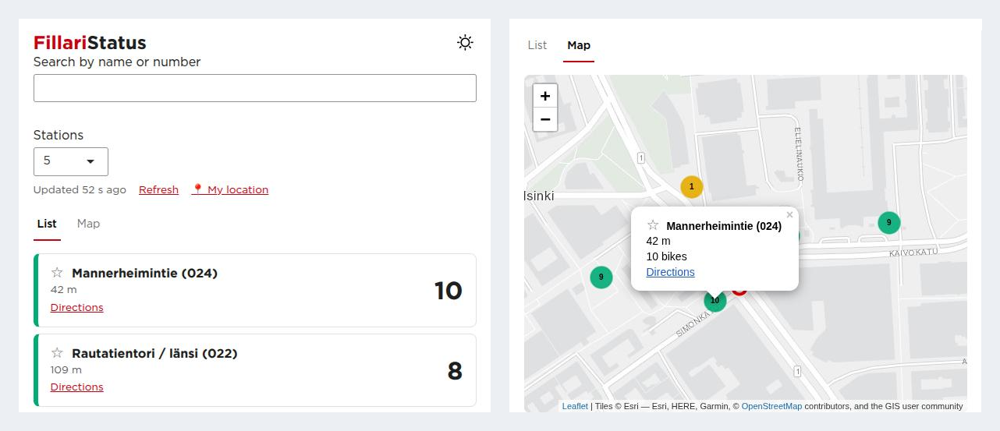

Are there city bikes near me right now? Live bike counts for the nearest Helsinki and Espoo stations, on a list or a map.

Uses your location to list the closest city bike stations, 5 by default and up to 20, with distances in metres or kilometres.
Colour-coded as empty, low or plenty, and always shown as a number too, so colour is never the only cue. Palette tested for colour blindness.
Markers with the bike count printed on them, popups with details, and a target showing where you are.
Find a station by name or number. A search overrides the nearby list, and clearing it brings the list back.
Pin the stations you use. They are stored in your own browser, so there is no account to create.
One tap opens walking directions to the station in Google Maps.
Light by default with a dark mode toggle, and a mobile-first layout that works one-handed.
A friendly message when the bike season is over, and the last known data kept on screen with a warning if a refresh fails.
Your browser shares your location (if you allow it). It is used in memory to rank stations and is not stored.
The server asks the HSL / Digitransit API for live station data once a minute, shared by all visitors.
Stations are sorted by distance, with your favourites pinned on top.
The list and the map update every minute, with a stamp showing how fresh the data is.
Station data © HSL / Digitransit, licensed CC BY 4.0. Map tiles © Esri — Esri, HERE, Garmin, © OpenStreetMap contributors, and the GIS user community.
There are no accounts and no database. Your location is used only to find nearby stations and is not stored. Favourites stay in your own browser.